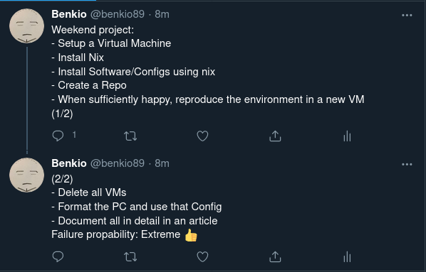
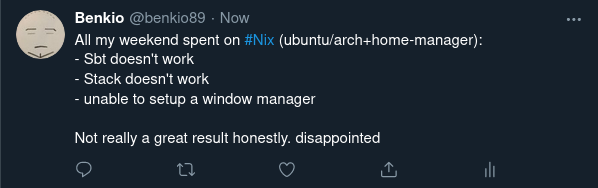

Time to Try Nix - A Weekend Experiment
Time to Try Nix - A Weekend Experiment
Created:
Abstract
Since some time now I hear about the Nix package manager: how it is awesome, how it solves you all the configuration problems of this world, how it will make you hardware agnostic. You can read all the benefits of it all over the web. Then, as a software developer and a curious nerd with his own configuration scripts and so on, I decided that's time to give it a go.
In this article, I will describe the process, from being a complete newbie, knowing nothing about it apart form the last paragraph, to set up a configuration in a weekend.
Disclamer: you might have different needs from mine, but still I think this could help someone else. So, let's get ready to rumble!!!
Content
The Plan
As a real professional, I must start with a tweet 😉

I skip the Virtual Box & Ubuntu Minimal installation. I choose
Ubuntu minimal as a base since I want to really start from scratch
and try to setup also the window manager.
Another question I want to answer straight away is: Why don't I
just start using NixOs instead? Honestly, I don't have a strong
reason, I can say I want to start as minimal as possible and from a
thing I know. Plus, it should be quicker to set up a minimal
virtual machine rather then one with NixOs.
First Impact
The only word I can think of is: overwhelming, but not in a good
way. It has so much stuff that you, newcomer, will feel confused
and disoriented. You might thing «Oh, let's read the manual/guide
from the official site», well there are tons of stuff: the Nix
language, the Nixos, the different commands, multi-user setup,
profiles and much much more. The only thing I found useful was
how to install Nix and that's it.
What I'm searching is: how to setup my own configuration, then,
when the need arise, I will go and search how to create a Set or a
function with the Nix language. Instead, a lot of the guides
doesn't start from a simple plain configuration with, let's say, just
wget and 7zip.
So, I kept reading and reading, landing finally on Reddit. They
suggest to take an existing configuration and start by modifying
that. I must say the majority of the guides are about NixOs
instead of just Nix on a non-NixOs distribution, like I'm trying to do.
NixOs and Home Manager
In the end, I discovered that, with Nix only, you can't
actually manage the whole system(or it's not straightforward at
least). In particular, I wasn't able to find a guide telling you
how to set up a proper script like you would with bash. Plus,
if you want to change some configuration apart from just
installing/uninstalling software, you need NixOs. That could be
installed by using the nix-in-place script, but, what it does is
to create an alternative root folder as you will just restart
in NixOs and moves everything you have to an old-root folder. I
don't think you want that, unless you just do it from the start
(and still I find it not very cool, let's say okayish).
After some more research, I found the Home Manager Package. This
will extend the capabilities of Nix by far and let you manage
your home directory using Nix. I still don't know if this has the
same power of NixOs, but it seems the thing I want. Especially,
considering that I wish to be more OS independent as possible.
What you have to do is to create a home.nix into your
$HOME/.config/nixpkgs/ and then run home-manager switch.
Checkout my Initial Commit. If you want to check out the initial
reference script, you can find it here.
Setup From existing Github Configuration
As every Emacs user, I already have my Emacs configuration
jealously crafted and polished. Now, I don't want to restart from
scratch and specify all the packages I have and so on. Plus, I have
some custom elisp functions I wish to preserve. Fortunately,
Nix gives you a way to fetch something from Github using
fetchFromGitHub function. (Manual Section)
So, the idea here is to:
- Download your configuration from Github: provide the owner, repository, reference to the specific commit or tag and hash SHA256 of the resulting directory
- Tell
Nixto copy it into the$HOME/.emacs.d/directory. I can't move it sinceNixstores immutable directories in his store. Therefore, you must just make a copy to the desired location. Fortunately the Emacs configuration, without compilation packages is not that big. - Setup the Emacs server hook. (Optional, advanced topic)
And that should be it. I took this issue as a reference. EDIT: After a little bit more research I found this better answer: emacs.d home-manager dot file(directory)
This works, BUT!!! the result will be all symlinks to the Nix
store. Then, you can't actually change anything from the
configuration itself because Nix store immutable data. You
should change it somewhere else, commit, recalculate the
sha256…a full-pain. Then, you have to put a simple shell snippet
to copy the source to the $HOME/.emacs.d/ folder and change the
permissions in order to be able to change it.
Huge downside of using fetchFromGitHub is that it just download
the tarball and extract it's content. Therefore, your Emacs .git
folder is not downloaded and then, when you move it to the right
place with the shell snippet you don't have the git
repository. Now, you can decide to use fetchGit with the
option leaveDotGit = true to solve the issue, but remember
that Nix rely on sha256 and bring the .git folder down will
increase the probability of a mismatch!! (source)
As a result, you will have your beloved emacs.d configuration
maintained in another repository. The only weirdness I noticed was
that the resulting git repository is set on a new branch called
fetchgit. What you have to do is to:
- Setup the remote:
git add remote origin https://github.com/.... - Create & checkout a new branch from
master. - Delete the
fetchgit.
Now the question is: does in work consistently? Is it actually reproducible? Future myself will tell.
Provided Packages
I must say the amount of available packages is huge: I found
(almost) all I needed straight out of the main channels. I had
some trouble installing the amule package due to a missing
library (crypto++) and the home-manager build became quite
slow checking the packages, but overall it went smoothly more then
expected.
The Unexpected
I added more packages, I added the keyboard configuration and so
on, then I looked into how to setup I3 and X11. Well, as a result
I caused an infinite login loop, inserting startx into the
.bash_profile. Apparently it tried just to turn back to login
again!!
Well, I guess it's time to try to setup a new virtual machine then.
As you could imagine, setting up X11 and XOrg is not that
straight forward as the other packages. The reason behind this is
because online you can find a lot of articles using NixOs that
provides a system layer, meanwhile in here I don't have that, I
need to setup everything into the home-manager that seems to
have a subset of the configurations you can specify in
NixOs.
For example, in the following pages all reference to the
Nix configurations in the etc folder:
XMonad NixOs Installation Page Gabriel Volpe's XMonad Configuration
edit: I start thinking that, installing XOrg into VirtualBox
is not a wonderful Idea and it might just not work. I'm thinking
about creating a Virtual machine with a GUI in place. I know it's
a fallback from the initial plan, but I have to reduce the amount
of weirdness if I wish to proceed 😃
After tons of trials, finally, I have to give up on
setting the Window Manager. Basically, if you are using NixOs it
should be easy: you have your own /etc/nixos/configuration.nix
where you set your system configuration and then, on
$HOME/.config/nixos/home.nix you can enable thing on the user
side easily. The problem here is that you are bound to
NixOs. You can install it with nix-in-place, but in my
mind you should be able to CONFIGURE everything you want without
having to go into the specific Linux distribution.
I might ask for help in the future into some IRC channel or wherever.
Developer Environment
After the failure of the previous section I decided that I can
live without setting my window manager for now (The Fox & The
Grapes), what about Scala and Haskell then? Well, guess what, I
cloned a bunch of project in both languages and I wasn't able to
compile them in the virtual machine.
- Sbt
MissingRequirementError: Object java.lang.object in compiler mirror not found
- Stack
libgmp.10.so: cannot open shared open file
For both this errors I scanned the internet for HOURS without any
success. After all this pain, I'm really considering to just have
an additional shell script to run post-Nix. At least I can get
what I can't set from Nix…if I just don't consider the whole
experiment a failure, but definitely it is not going the way I was
hoping for. Especially considering that I could just
install the haskell-plaftorm with a one-liner command.
Conclusions

Well, this is the final result. Not that great. What I could try to
do is to actually use directly NixOs and get away with it, but
who knows.
I know you want me to answer the questions:
- Is it hard? Yes, as every time you need to work with a new technology I guess. You need to learn a new language, a new way of dealing with software and basically google for everything hoping it's not a pain in the nuts…being often disappointed…
- Do you recommend it? Mmm hard to say, I did it since I'm a nerd and I like to try stuff out when I hear/read good things about them, but it's really worth it? Isn't just better to create your docker image and live with it? Is actually better then a well crafted script? Very hard to say, but I mean: I use Emacs, I have a blog in org-mode. It's obvious that there is already something wrong here. Probably, you should consider how important is for you to have a really stable environment (more than bash script) and how frequently you have to setup a new machine as well!
- When this could be convenient? I think, using
Nix+home-managerwithoutNixOs, could be convenient when you don't care/want/can manage the operating system settings, eg. some developers set up their MacOs usingNixinstead ofHomebrew.
References
- NixOs Website
- Where you can find all the official instructions
about
Nixand the related distribution. - Nix In Place
- You can install
NixOswherever you want (Linux or Mac) more or less. - Home Manager
Nixpackage that allows you to access quite some configuration options of your home directory as well as manage your software.- My Nix Configuration
- Here is where I try to build my nix configuration.
- Reference Script
- Script I used until now to setup a new machine